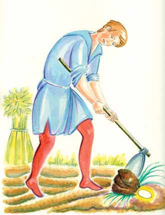
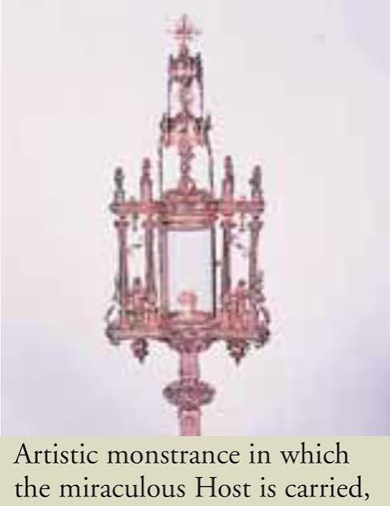
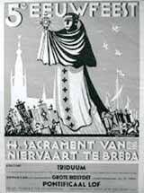

The Eucharistic Miracle of Breda-Niervaart occurred on June 24, 1300, in the Netherlands. When a soldier stole a consecrated Host during a pillage, a local farmer discovered it hidden and intact under a lump of dirt. Today, the event remains a deeply venerated historical phenomenon.
The Investigation: The Bishop of Liège conducted one of the most authoritative and comprehensive historical investigations into the recovery and authenticity of the Host.
Ongoing Devotion: Despite changing religious and political tides, the local community has kept the memory and devotion of this event alive. The region continues to honor the miracle through traditional annual processions, public prayers, and historical paintings.